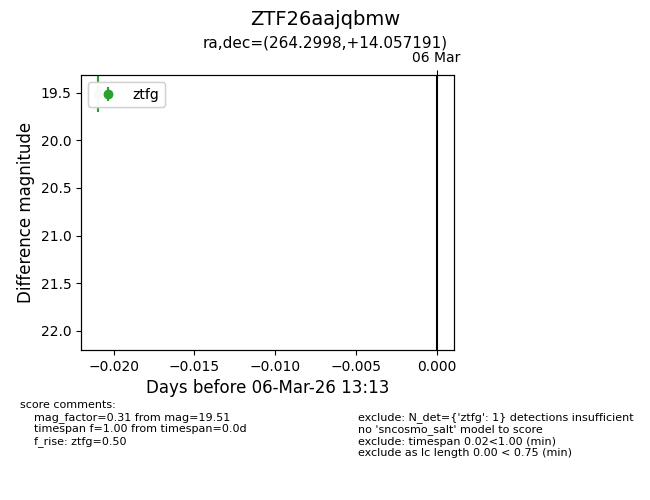
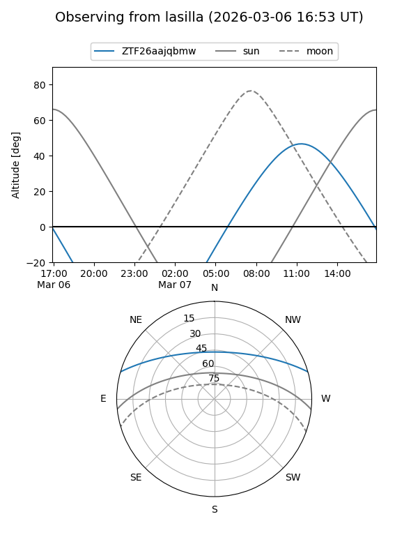
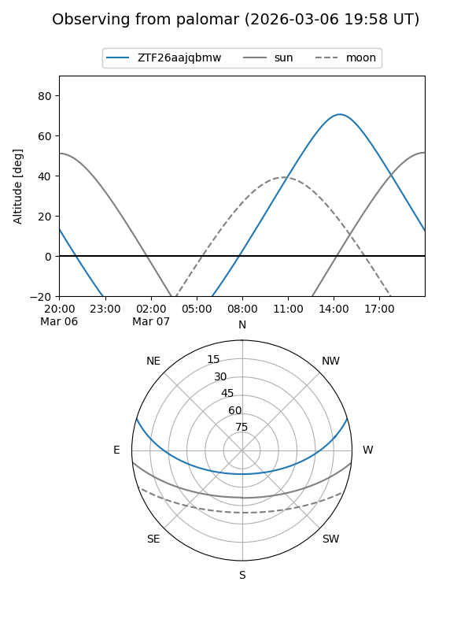

ZTF26aajqbmw
Target ZTF26aajqbmw at 2026-03-06 13:14
Aliases and brokers:
FINK: link
Lasair: link
ALeRCE: link
alt names
ZTF26aajqbmw (ztf,fink_ztf)
Coordinates:
equatorial (ra, dec) = 264.2998,+14.05719
equatorial (HMS+DMS) = 17:37:11.95,+14:03:25.89
galactic (l, b) = (37.6180,+22.67772)
Flags:
Photometry:
last ztfg=19.51
1 ztfg detections
Lightcurve

Visibility


Additional plots